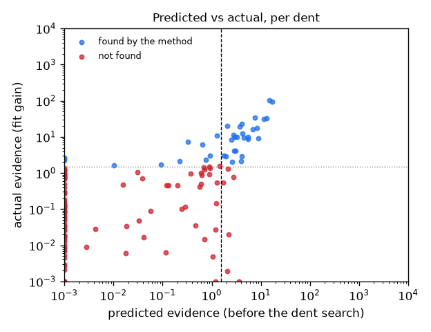
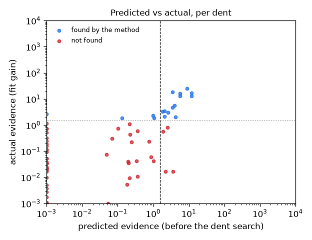

Knowing what the photos can show: detection limits
The new idea for the paper: before searching for a dent, compute how much evidence a dent of a given depth would leave in these photos after camera, lighting and a stain have explained everything they can. That gives the smallest detectable dent at every point on the blade, so the method bounds its misses as well as its false alarms. Below we test whether this prediction agrees with what the frozen method actually did. Nothing in the method was changed or re-tuned. ← main results
Does the prediction match reality?
| Test set | Dents | AUROC: predicted evidence → found | …visible dents only | Depth alone | Visibility alone | Depth × visibility | Predicted correctly at the threshold |
|---|---|---|---|---|---|---|---|
| Sealed test (blades 37–66) | 150 (37 found) | 0.90 | 0.95 | 0.63 | 0.82 | 0.85 | 89% (TP 26, TN 107, FP 6, FN 11) |
| Second sealed test (blades 67–96) | 70 (17 found) | 0.92 | 0.88 | 0.55 | 0.88 | 0.86 | 89% (TP 13, TN 49, FP 4, FN 4) |
AUROC 1.0 means the prediction perfectly separates the dents the method finds from those it misses; 0.5 is chance. The prediction beats depth and visibility heuristics because it also accounts for viewing angle, lighting and whether a stain could mimic the dent.


Progress
2026-10-12T06:23:17Z phase2 started 2026-10-12T06:23:17Z START detect_test (try 1) 2026-10-12T06:41:47Z DONE detect_test 2026-10-12T06:41:47Z START detect_test2 (try 1)